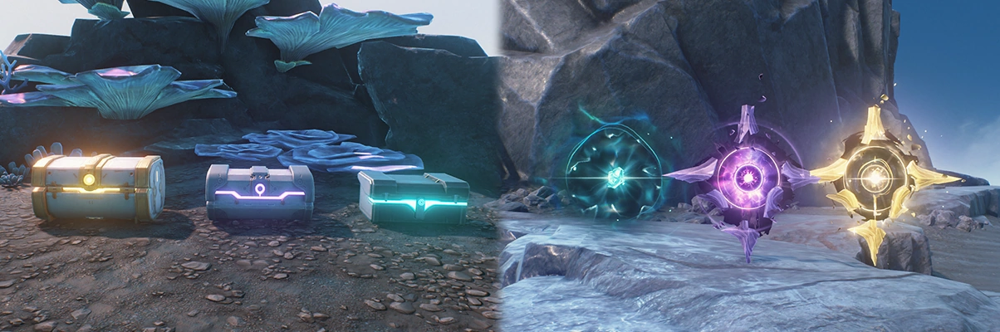

Tip: Focus on renewable / time-limited sources of astrite first as they have a strict time limit!
Renewable sources of astrite:
Resets Daily
Daily missions (Total: 60)
Daily missions involve simple tasks such as: carrying out the daily task, spending 180 waveplates, etc. Getting 100 activity points provides the player with maximum rewards, including astrites and echoes.
Resets Weekly
Fantasies of Thousand Gateways (Total: 160)
The Fantasies of Thousand Gateways is a recurring event that resets weekly, it involves the player being transported into another world and using gamemode-specific buffs in an attempt to clear the 'Somnoire'.
Resets Monthly
Tower of Adversity (Total: 800)
The Tower of Adversity has both a permanent mode and one that resets monthly (The Hazard Zone). The latter is what we are focusing on in this subchapter. Similar to the permanent towers, it involves fighting bosses that get stronger & stronger with each level and trying to beat them before a certain time limit. However, do keep in mind that the 'Hazard Zone' has generally harder mobs than the 3 permanent towers.
Whimpering Wastes (Total: 800)
Similar to the Tower of Adversity, Whimpering Wastes has both permanent & recurring modes (Respawning Waters Chasm & Respawning Waters Torrents). Like the TOA, it also involves fighting bosses that get stronger & stronger, beating them under a time limit and gaining enough points for maximum rewards.
Non-renewable sources of astrite:
Tidal Heritages & Supply Chests (Huanglong specific)

As shown in the image above, chests and tidal heritages both have a respective gold, purple and blue colour. In addition to these 3 colours, there is a fourth one (gray) unique only to supply chests.
The basic supply chest (gray) provides 5 astrite when claimed, the standard supply chest (blue) provides 10 astrite, the advanced (purple) provides 20 and last but not least, the premium (gold) provides 40 astrite when claimed.
On the other hand, the tidal heritages provide a flat 5 astrite when claimed, regardless of its colour.
Sonance Caskets (Total: 600)
Delivery of a certain number of sonance caskets to Chenpi, the 'Relic Merchant' over at Jinzhou via the Casket Delivery process will provide the player with various rewards, ranging from astrites to cooking recipes.
Windchimers (Total: 360)
Windchimers are similar to Sonance Caskets, except for the fact that they are found only in Mt. Firmament. They are essentially the Mt. Firmament specific version of sonance caskets, as those can't be found in said area. Similarly, the player must give them to a specific NPC (Xian'ge) in order to claim the rewards.
Blobflies & Frostbugs
Blobflies & Frostbugs (the Mt. Firmament specific version of blobflies, similar to sonance caskets & windchimers) are crucial to obtaining 100% exploration for an area. Blobflies provide the player with 10 astrite when killed whereas Frostbugs give 20 each.
Resonance Nexus & Resonance Beacons
On top of being crucial for world exploration, claiming resonance beacons & nexus for the first time provide the player with 5 and 30 astrite respectively.
Time-limited Events
As the name suggests, time-limited events are, well, time-limited. They are usually updated (and therefore last) every phase of a patch (there are 2 phases per patch). Out of all possible ways to obtain astrite, time-limited events are by far the most generous, ranging from 400 to over 1200, with it usually being in the middle (800).
Permanent Events
Permanent events last for an indefinite amount of time, meaning there is no rush to finishing them. They usually provide slightly less astrite than time-limited events, but are still a hefty amount nonetheless.
Quests (Main, Tutorial, Side, Exploration, Companion & Event)
All types of quests (listed above) provide astrite when cleared, albeit in varying amounts. Generally, side quests give the least (20) and main quests give the most (200), with the rest falling in the middle of the two.
Codes
Codes are usually very time-limited (lasting only 1-2 days before it expires), so always be vigilant and on the lookout for codes. The only exception to this is the code 'WUTHERINGGIFT', which has been made claimable forever.
Tutorials (1 astrite per tutorial)
Looking at a new (marked by a red exclamation point) tutorial for the first time in the tutorials menu (found in the main menu) provides the player with 1 astrite. This can be especially useful when trying to get to a round, specific number of astrites.
Web events
Usually a day or two after the release of a new patch, and relatively (a week or so) before the next, Kuro will release a web event, which players can do for various rewards. Compared to the other methods, web events usually don't give out that many astrites, but they are still worth doing as web events usually only take a few minutes of your time.
Milestones (Total: 780)
Milestones are a general list of tasks for the player to carry out, usually aimed at teaching newer players how to play the game and helping to guide their account into the right direction.
Trophies
Trophies are the Wuthering Waves equivalent of achievements. There are 3 different types of trophies, categorized by the number of stars they have, with 1 star correlating to 5 astrite, 2 stars with 10 and 3 stars with 20. It's also worth noting that you can only unlock the 3 star equivalent of a trophy after completing their previous ones (1 & 2 star)
Data bank (Total: 1200)
Levelling up the data bank is one of the most important things a beginner can do, as it provides them with access to 5-star echoes and increased stamina. In addition to these bonuses, player are also rewarded with astrites, and echo development materials such as tuners and modifiers.
Cooking foods and drinks increases proficiency (up to a certain limit for each item). When the player's proficiency surpasses certain numbers, their cooking level rises, providing various rewards in the process.
Synthesizing level (Total: 200)
Synthesizing potions and medicines increases proficiency (up to a certain limit for each item). When the player's proficiency surpasses certain numbers, their synthesizing level rises, providing various rewards in the process.
Tower of Adversity [permanent] (Total: 2200)
As mentioned previously above, on top of a zone that resets monthly, the Tower of Adversity also contains 3 zones (Stable, Experiment & Overdrive) that provide one-time clear rewards.
Whimpering Wastes [permanent] (Total: 800)
Similarly, Whimepering Wastes also has a permanent zone (Forbidden Waters), which can be cleared at any time (though it's worth nothing that it's a prerequisite to clear this in order to unlock the Whimpering Wastes zones that do reset monthly).
First-clear rewards [Huanglong specific>(Total: 300)
Clearing a tacet field and / or boss for the first time provides the player with 20 astrite each.
Pioneer association [Huanglong specific] (Total: 500)
Reaching certain exploration progresses (25, 50, 75 & 100%) in each region at Huanglong and talking to Maqi over at Jinzhou allows the player to level up his pioneer association level, providing him with various rewards.
Skill & Basic training (Total: 540)
You are able to undergo 3 basic training trials in the guidebook, designed for specific combat mechanics such as dodging and / or counterattacking. Each of these trials provides the player with 20 astrite. Additionally, the player is able to enter a 'Skill training' with each of the characters that they own, clearing each of these training programs provides the player with 10 astrite each (meaning the more characters you own, the more astrite you can get).
Tactical Holograms (Total: 1920)
Tactical Holograms are essentially buffed-up boss fights. They involve fighting the bosses you encountered in each region (i.e Inferno Rider, Fallacy of no Return, etc.) and beating them before a specific time limit. In total, there are 16 tactical holograms, each of which have 6 stages (with the AI becoming increasingly better with each one). Clearing any stage of any tactical hologram for the first time provides the player with 20 astrite.
Non-F2P friendly sources of astrite:
Lunite subscription (Total: 3000)
Purchasing special bundles
Purchasing bundles such as the 'Champion's radiant collection' gives the player astrite, convene tokens and other rewards.
Purchasing the lunite subscription provides the player with 300 lunite immediately, and 90 astrite daily for the next 30 days for simply logging into the game.
Insider channel [Pioneer Podcast] (Total: 680)
In addition to the various materials, convene tokens and other rewards, purchasing the insider channel add-on of the pioneer podcast provides the player with 680 astrite.
Lunites top-up
Lunites can be purchased directly from the store (with a 2x top-up bonus applying for topping up each pack for the first time), and converted into astrite at a 1:1 rate.
Purchasing premium aspect (Total: 300)
The premium aspect ('Dawn Upon Thorns' set) can be found in the store and provides the player with a bonus of 300 astrite along with the glider & wings skin.